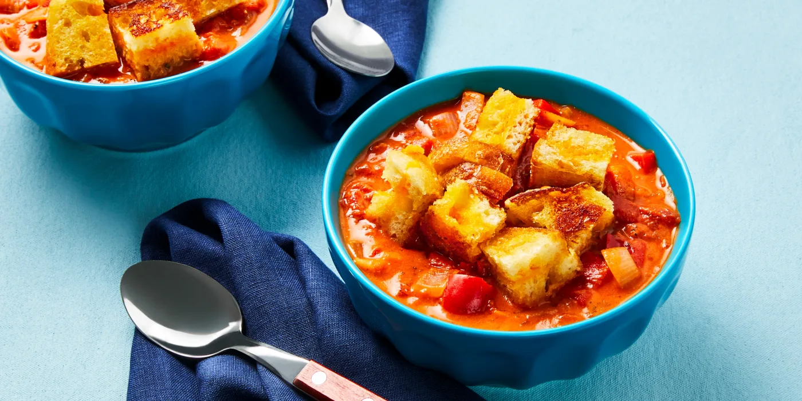

Tomato and Red Pepper Soup

Description
Your childhood favorite all grown up! A creamy tomato soup with bell pepper and grilled cheese croutons makes for a
delicious fall meal.
Ingredients
- 1 bell pepper
- 1 onion
- 3 cloves garlic
- 2 tbsp dried oregano
- 2 tbsp tomato paste
- 1 small can crushed tomatoes
- 2 cups vegetable stock
- 1/2 tsp sugar
- 2 slices sourdough bread
- 1/4 cup cheddar cheese
- 1 tbsp butter
- 2 tbsp cream cheese
- salt and pepped
- oil of your choice
Directions
- Wash and dry produce. Core, deseed, and dice bell pepper into 1/2 inch pieces. Halve, peel, and dice onion. Peel and
finely chop garlic.
- Heat a drizzle of oil in a medium pot over medium-high heat. Add bell pepper and onion; cook, stirring occasionally,
until softened, 5-7 minutes. Season with salt and pepper. Add garlic and oregano; cook, stirring, until fragrant, 30-60
seconds more. Stir in tomato paste until evenly coated.
- Stir crushed tomatoes, stock, 1 tsp salt, and 1/2 tsp sugar into pot until combined. Bring to a boil, then reduce heat
to medium low. Simmer, stirring occasionally, until soup has thickened slightly, 8-10 minutes. Season generously with
salt and pepper.
- Meanwhile, evenly top one bread slice with cheddar. Top with remaining bread to form a sandwich. Melt 1/2 tbsp butter
in a large pan over medium heat. Add sandwich and cook until bread is golden brown on one side, 2-4 minutes. Add another
1/2 tbsp butter to pan and flip sandwich; cook until cheese melts, 2-3 minutes more. Transfer to a cutting board.
- Once soup has thickened, stir in cream cheese until smooth. Taste and season with salt and pepper if desired.
-
Once sandwich is cool enough to handle, cut into 1-inch pieces. Divide soup between bowls. Top with grilled-cheese
croutons.